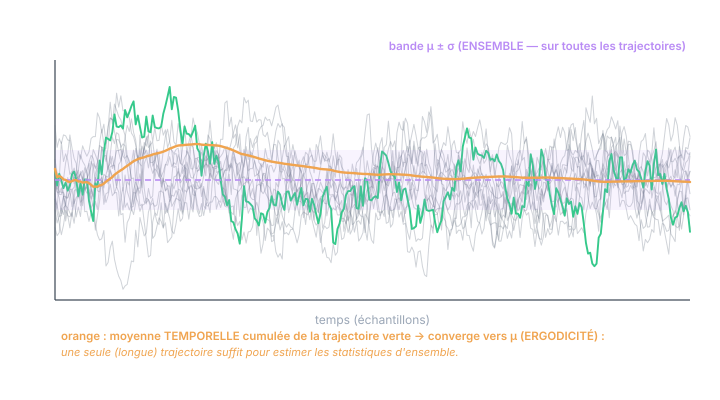
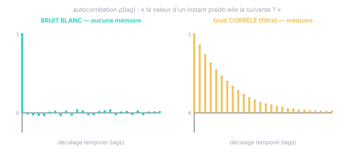

Chapitre 05
Processus aléatoires : le hasard dans le temps
Objectifs du chapitre
- Définir un processus aléatoire et sa trajectoire (réalisation temporelle).
- Comprendre stationnarité et ergodicité — et pourquoi elles autorisent à mesurer une loi sur un seul enregistrement.
- Manier l'autocorrélation : la mémoire d'un signal.
- Définir proprement le bruit blanc — l'hypothèse centrale du filtre de Kalman.
1. Le processus : une variable aléatoire par instant
Un processus aléatoire {Zₖ} est une famille de variables aléatoires indexée par le temps : une VA Z₁ pour le cycle 1, une VA Z₂ pour le cycle 2, etc. Le modèle du bruit de votre inclinomètre n'est pas une VA : c'en est une par échantillon, plus la donnée de leurs liens mutuels.
Et la réalisation ? Quand l'expérience a lieu — quand votre capteur tourne —, chaque VA de la famille tire sa valeur : il en sort une suite de nombres z₁, z₂, z₃, … — un signal. Cette suite s'appelle une trajectoire (ou réalisation) du processus. Voilà, énoncée en une phrase, la réponse à la question qui bloque tout le monde :
Une réalisation temporelle n'est pas « la VA devenue signal » : c'est un tirage par instant. Le processus (niveau ensemble) est la pile de machines à tirer — une par cycle ; la trajectoire (niveau réalisation) est la suite des valeurs sorties. Rejouez le monde : les machines sont les mêmes, la trajectoire est différente. C'est exactement la figure 1.1 : les signaux gris et vert sont des trajectoires ; la gaussienne de droite est la loi de la VA d'un instant.
2. Stationnarité : quand les règles ne changent pas
Le processus est stationnaire si ses propriétés statistiques ne dépendent pas de l'instant : même moyenne μ, même variance σ² à chaque cycle, et des liens entre instants qui ne dépendent que de leur écart, pas de la date. En clair : la machine à tirer du cycle 1000 est identique à celle du cycle 1.
Le bruit d'un capteur en régime thermique établi est bien modélisé ainsi. Contre-exemples immédiats : un capteur qui chauffe (la moyenne dérive — non stationnaire en moyenne), une marche aléatoire (la variance croît avec le temps — chapitre 6). La stationnarité est ce qui donne un sens à des phrases comme « le σ de ce capteur » : sans elle, il y aurait un σ par instant.
3. Ergodicité : le temps peut remplacer l'ensemble
Question pratique cruciale : la loi (moyenne, variance…) est définie sur l'ensemble — sur tous les mondes possibles. Or vous n'avez qu'un monde : un seul enregistrement de votre capteur. De quel droit calcule-t-on « la variance du capteur » en moyennant dans le temps sur cette unique trajectoire ?
Réponse : parce que le processus est ergodique. Un processus (stationnaire) est ergodique si les moyennes temporelles le long d'une seule trajectoire convergent vers les moyennes d'ensemble :

L'ergodicité n'est pas gratuite. Contre-exemple parlant : un lot de capteurs dont chaque exemplaire a un biais de fabrication différent (fixe dans le temps). Moyenner dans le temps votre exemplaire donne son biais — jamais la moyenne du lot. Le temps ne peut remplacer l'ensemble que pour les grandeurs qui fluctuent au fil de la trajectoire ; il est aveugle à ce qui est figé une fois pour toutes dans votre monde. C'est exactement la différence entre bruit (ergodique, mesurable au repos) et biais (à calibrer) du chapitre 16 du cours Kalman.
4. L'autocorrélation : la mémoire du signal
Pour un processus, la question nouvelle par rapport à une VA isolée est celle des liens entre instants : la valeur d'aujourd'hui renseigne-t-elle sur celle de demain ? La covariance du chapitre 3, appliquée au couple (Zₖ, Zₖ₊ℓ), donne l'autocorrélation (normalisée) :
ρ(0) = 1 toujours (une valeur est parfaitement corrélée à elle-même). La forme de ρ(ℓ) pour ℓ ≥ 1 est la carte d'identité dynamique du signal : sa mémoire.

5. Le bruit blanc : le hasard sans mémoire
Le bruit blanc (discret) est le processus le plus simple : des VA de moyenne nulle, de même variance, et décorrélées entre instants :
« Blanc » vient de l'optique : comme la lumière blanche contient toutes les couleurs, ce bruit contient toutes les fréquences à parts égales (on le verra au chapitre 7). Sans mémoire, il est imprévisible au sens fort : connaître tout le passé n'aide en rien à deviner le prochain tirage — la meilleure prédiction est toujours 0.
Pourquoi le filtre de Kalman exige du blanc. Les hypothèses « bruit de mesure blanc, bruit de process blanc » (cours Kalman, ch. 5) ne sont pas décoratives : si le bruit avait de la mémoire, sa valeur passée contiendrait de l'information sur sa valeur future — information que le filtre, tel quel, ne saurait pas exploiter (il serait sous-optimal), et qui rendrait fausse sa comptabilité d'incertitude. La parade standard face à un bruit coloré : modéliser sa mémoire dans l'état (un état de biais, un filtre formeur), pour que le résidu, lui, soit blanc. Et le test de blancheur de l'innovation (ch. 8 et 12 du cours Kalman) n'est rien d'autre que la vérification ρ(ℓ) ≈ 0 de la figure 5.2, appliquée aux innovations.
6. Un exemple de mémoire : le bruit filtré (AR-1)
Le modèle à mémoire le plus utile est l'autorégressif d'ordre 1 — un bruit blanc « lissé » par récurrence, exactement ce que produit un capteur avec filtre interne (le retard 1er ordre du cours Kalman, ch. 11) :
Chaque valeur garde une fraction a de la précédente : la corrélation décroît géométriquement (la décroissance de la figure 5.2, à droite). Plus le filtre est agressif (a proche de 1), plus la mémoire est longue — et plus l'estimateur de variance naïf se trompe si on l'applique sans précaution (c'est le « piège de la fenêtre » du chapitre 16 du cours Kalman, et l'exercice 2 ci-dessous).
Exercices
Exercice 1 — Stationnaire ? Ergodique ? Blanc ?
Pour chaque signal, dites s'il est (approximativement) stationnaire, et si son bruit est blanc : (a) le bruit de votre inclinomètre en régime thermique établi ; (b) la sortie du même inclinomètre pendant la chauffe (30 premières minutes) ; (c) la dérive intégrée d'un gyromètre ; (d) l'innovation d'un filtre de Kalman bien réglé.
Voir la solution
- (a) Stationnaire (mêmes statistiques à tout instant), et ~blanc si le capteur ne filtre pas trop en interne.
- (b) Non stationnaire : la moyenne (le biais thermique) dérive — la « machine à tirer » change au fil des minutes. Mesurer R pendant la chauffe donne un résultat pollué.
- (c) Non stationnaire : c'est une marche aléatoire, sa variance croît avec le temps (chapitre 6). Aucun σ unique ne la décrit.
- (d) Stationnaire (en régime permanent) et blanche — c'est même la définition opérationnelle du bon réglage : si l'innovation a de la mémoire, le filtre a laissé de l'information sur la table.
Exercice 2 — La mémoire fausse le comptage
Vous mesurez la variance d'un capteur qui filtre en interne (AR-1 avec a = 0,9). Vos N échantillons ne sont donc pas indépendants. L'estimation de la variance reste correcte (elle converge, ergodicité), mais l'estimation de la moyenne est moins précise que le σ/√N habituel. Expliquez qualitativement pourquoi, et donnez l'idée du remède.
Voir la solution
Avec de la mémoire, deux échantillons voisins répètent en partie la même information : vos N points ne valent pas N tirages indépendants, mais l'équivalent de N_eff < N tirages « frais » (pour un AR-1, N_eff ≈ N·(1−a)/(1+a) — ici ≈ N/19 !). La moyenne converge donc en σ/√N_eff, bien plus lentement. Remèdes : enregistrer plus longtemps (le temps « décorrèle »), sous-échantillonner à un pas supérieur à la mémoire, ou estimer via les différences successives qui, elles, tuent la partie lente (l'estimateur lag-1 du cours Kalman, ch. 16). Moralité : avant de compter des échantillons, regarder l'autocorrélation.
Exercice 3 — Relire la figure 1.1
Avec le vocabulaire de ce chapitre, redécrivez la figure 1.1 du chapitre 1 (les spaghetti + la gaussienne) en une phrase utilisant les mots : processus, trajectoire, VA d'un instant, stationnaire.
Voir la solution
« Les courbes grises et verte sont des trajectoires du même processus stationnaire ; la coupe verticale isole la VA d'un instant, dont la loi (la gaussienne de droite) est la même à tout instant puisque le processus est stationnaire. » — Si cette phrase vous paraît limpide, l'objectif principal du cours est atteint : les « deux niveaux » et le temps ne font plus qu'un seul cadre cohérent.
Récapitulatif
- Processus = une VA par instant (+ leurs liens). Trajectoire = un tirage par instant = le signal observé. « Passer de la VA à la réalisation temporelle » = tirer chaque instant.
- Stationnaire : mêmes statistiques à tout instant — donne un sens à « le σ du capteur ».
- Ergodique : moyennes temporelles (une trajectoire) → moyennes d'ensemble (la loi). Légitime la mesure de R sur un seul enregistrement. Limite : aveugle aux grandeurs figées (biais d'exemplaire).
- Autocorrélation ρ(ℓ) : la mémoire. Bruit blanc : ρ(ℓ) = 0 pour ℓ ≠ 0 — imprévisible, l'hypothèse clé de Kalman ; bruit filtré (AR-1) : ρ(ℓ) = a^ℓ, mémoire géométrique.
- Bruit à mémoire → le modéliser dans l'état ; échantillons corrélés → moins d'information par point (N_eff < N).